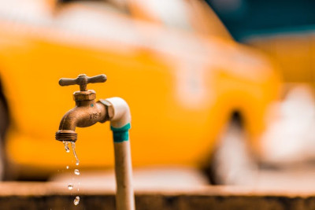

Consumo exacerbado
O desperdício de água é um problema ambiental que ocorre de forma recorrente em todo o mundo. Entre as suas causas estão a má gestão dos recursos hídricos e o consumo doméstico exacerbado. O desperdício de água tem como consequências graves problemas ambientais e a escassez hídrica em várias localidades. No Brasil, que possui altas taxas de desperdício de água, o maior consumo de água dá-se especialmente nas atividades agropecuárias e industriais.
A água é um recurso natural muito importante, visto que está intimamente ligada à presença de vida no planeta. Ela é fundamental para a sobrevivência humana e para a manutenção do equilíbrio ecológico. Enquanto recurso, contribui para o desenvolvimento econômico e social em razão do seu uso em diferentes atividades, como a agropecuária e a industrialização.
Faça seu teste!